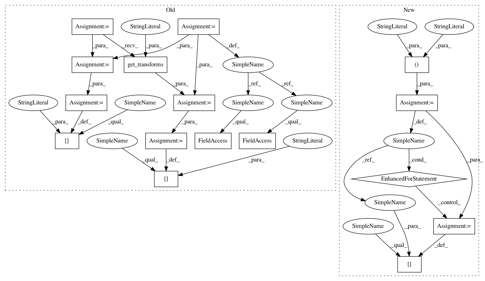

2860e37da4e0b1335f25fcb0f62ab2d81698c752,examples/cifar_stages/experiment.py,Experiment,get_datasets,#Experiment#Any#,33
Before Change
def get_datasets(self, stage: str, **kwargs):
datasets = OrderedDict()
trainset = torchvision.datasets.CIFAR10(
root="./data",
train=True,
download=True,
transform=Experiment.get_transforms(stage=stage, mode="train")
)
testset = torchvision.datasets.CIFAR10(
root="./data",
train=False,
download=True,
transform=Experiment.get_transforms(stage=stage, mode="valid")
)
datasets["train"] = trainset
datasets["valid"] = testset
return datasets
After Change
def get_datasets(self, stage: str, **kwargs):
datasets = OrderedDict()
for mode in ("train", "valid"):
datasets[mode] = CIFAR10(
root="./data",
train=(mode == "train"),
download=True,
transform=self.get_transforms(stage=stage, dataset=mode),
)
return datasets
In pattern: SUPERPATTERN
Frequency: 4
Non-data size: 16
Instances
Project Name: Scitator/catalyst
Commit Name: 2860e37da4e0b1335f25fcb0f62ab2d81698c752
Time: 2020-01-23
Author: 19803638+bagxi@users.noreply.github.com
File Name: examples/cifar_stages/experiment.py
Class Name: Experiment
Method Name: get_datasets
Project Name: catalyst-team/catalyst
Commit Name: 2860e37da4e0b1335f25fcb0f62ab2d81698c752
Time: 2020-01-23
Author: 19803638+bagxi@users.noreply.github.com
File Name: examples/_tests_mnist_stages2/experiment.py
Class Name: Experiment
Method Name: get_datasets
Project Name: Scitator/catalyst
Commit Name: 2860e37da4e0b1335f25fcb0f62ab2d81698c752
Time: 2020-01-23
Author: 19803638+bagxi@users.noreply.github.com
File Name: examples/cifar_stages/experiment.py
Class Name: Experiment
Method Name: get_datasets